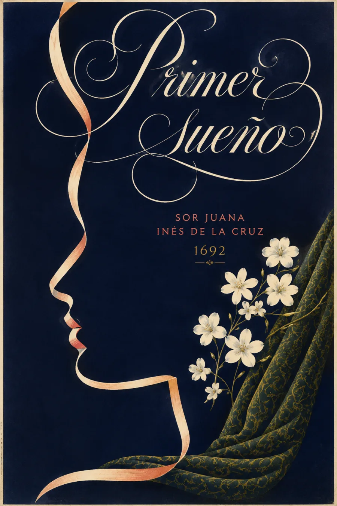

Una noche para intentar lo inmenso
La noche suspende la actividad del mundo. Mientras el cuerpo duerme, el alma emprende una búsqueda que aspira a comprender la totalidad. La grandeza del universo rebasa esa mirada: el poema explora tanto el impulso de conocer como las dificultades de hacerlo.
El límite del entendimiento no borra la dignidad de la búsqueda.
Publicado en 1692, Primero sueño —aquí presentado como Primer sueño— despliega 975 versos en forma de silva. Su lenguaje entrelaza imágenes naturales, mitología y saberes del cuerpo. El regreso de la luz cierra el recorrido nocturno y devuelve la voz a la vigilia.
Contexto y datos de publicación: UNAM, Primero sueño. Sobre su relación con Góngora: Elías L. Rivers, Biblioteca Virtual Miguel de Cervantes. El paisaje de cabecera es una interpretación alegórica contemporánea.
La lectura
Primer sueño · Poema completo
Para orientarse en la escucha: la noche y el reposo del cuerpo; la búsqueda del alma; los límites del conocimiento; el retorno del día. Son momentos de lectura, no capítulos originales.
Reseñas

Bueno